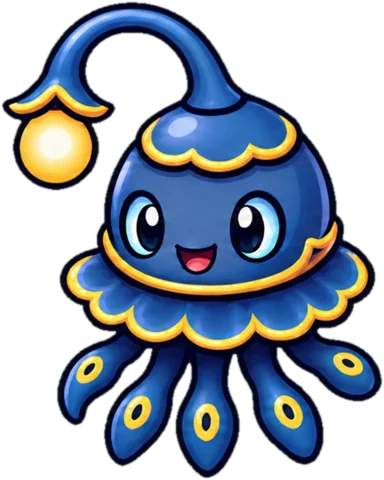

 Water
Water Psychic
PsychicTap a stage to read its story.
A tiny deep-blue jellyfish no bigger than a fist, Luminox bobs gently with a round bell-shaped body and a glowing orb dangling from a slender stalk above its head. Four short tentacles trail beneath it, shimmering faintly with pale light. In Coral Bay's shallower reefs, young Luminox drift in slow circles, drawn toward the brightest coral, and guardians say its glow pulses once for every new voice it hears. It is said to be a messenger of the sea's memory.
Field note: Each pulse of its head-lantern lasts exactly as long as one deep breath - never shorter, never longer.
Coral Bay. Luminox and its family are found in the Coral Bay. See everyone who lives there.
Share a Bond Food that matches its types to become friends. Luminox loves:
A Bond Food is not a trick. It joins your spirit with the Kimuro's spirit, and only when it chooses you.
Print the Kimuro adventure packs: mazes, cards, a board game and Bond Mark medals.
See the printable packs